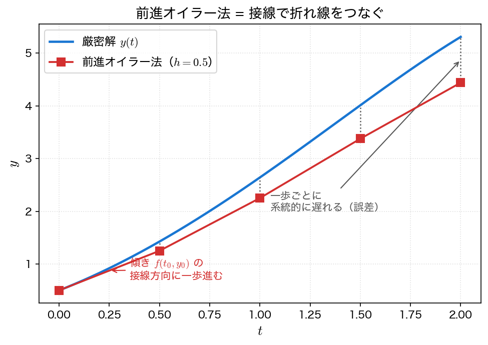
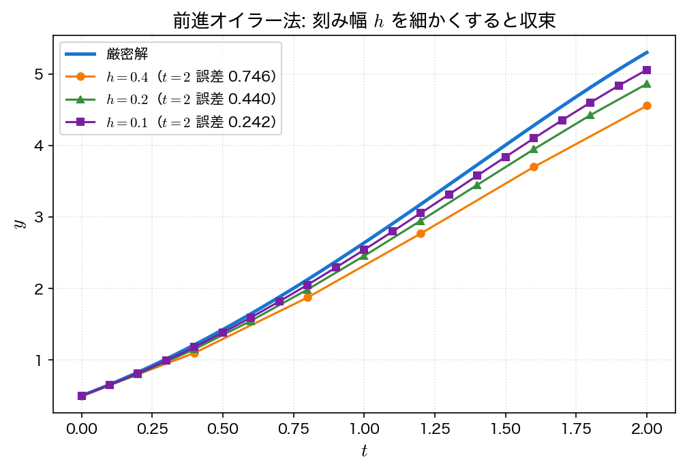

オイラー法
前進オイラー法（forward Euler method, explicit Euler method）は、初期値問題 \(y' = f(t, y),\ y(t_0) = y_0\) を解く最も基本的な数値解法である。考え方が単純で実装も容易なため、すべての1段法の出発点となる。精度は高くないが、ここで身につける「傾きを使って一歩進める」という発想は、ルンゲ＝クッタ法にもそのまま受け継がれる。
導出：テイラー展開（前進差分）
真の解 \(y(t)\) を時刻 \(t_n\) のまわりでテイラー展開する。
ここで \(y'(t_n) = f(t_n, y(t_n))\) である。\(h^2\) 以降の項を切り捨て、\(y(t_n)\) を近似値 \(y_n\) で置き換えると、次の前進オイラー法の反復式が得られる。
同じ式は、微分を前進差分で近似する見方からも導ける。
幾何的な意味
前進オイラー法は、いまいる点 \((t_n, y_n)\) での接線の方向に、\(h\) だけ一歩進む操作である。傾きは右辺 \(f(t_n, y_n)\) そのものなので、解曲線の接線を1本引き、その上を \(t\) 方向に \(h\) だけ移動して次の点を得る。これを繰り返すと、解曲線を接線でつないだ折れ線が描かれる。

曲線が曲がっているのに接線はまっすぐ進むため、1ステップごとにわずかなずれが生じ、それが積み重なって誤差になる。刻み幅 \(h\) を小さくすれば接線で追える範囲が狭くなり、誤差は小さくなる。
アルゴリズム
入力: 右辺 f, 初期時刻 t0, 初期値 y0, 刻み幅 h, ステップ数 N
出力: 各時刻の近似値 y0, y1, ..., yN
t = t0
y = y0
出力 (t, y)
for n = 0, 1, 2, ..., N-1:
y = y + h * f(t, y) # 接線方向に一歩進む
t = t + h
出力 (t, y)
局所誤差と大域誤差：1次精度
精度を2つの誤差で考える。
- 局所打ち切り誤差（local truncation error）: 1ステップだけ進めたときに生じる誤差。テイラー展開で切り捨てた項より \(\dfrac{h^2}{2} y''(\xi) = O(h^2)\) である。
- 大域誤差（global error）: 区間全体を進んだ後の、最終時刻での誤差。区間 \([t_0, t_{\text{end}}]\) を進むには \(N = (t_{\text{end}} - t_0)/h\) ステップ必要で、各ステップの \(O(h^2)\) の誤差が約 \(N \propto 1/h\) 回積み重なるため、大域誤差は
となる。すなわち前進オイラー法は1次精度（first order）である。刻み幅 \(h\) を半分にすると、大域誤差はおよそ半分になる。
局所は \(O(h^2)\)、大域は \(O(h)\)
「1ステップの誤差」と「最終的な誤差」で次数が1つずれる点に注意する。一般に局所打ち切り誤差が \(O(h^{p+1})\) の解法は、大域誤差が \(O(h^p)\) の \(p\) 次精度になる。この関係は精度と収束次数のページで詳しく扱う。
サンプルコード
例題1（\(y' = y - t^2 + 1\)、\(y(0) = 0.5\)）を前進オイラー法で \(h = 0.2\) として解き、各時刻で数値解・厳密解・誤差を表示する。
#include <stdio.h>
#include <math.h>
/* 例題1: y' = y - t^2 + 1, y(0) = 0.5, t in [0,2] */
/* 厳密解: y(t) = (t+1)^2 - 0.5 e^t */
double f(double t, double y) { return y - t*t + 1.0; }
double exact(double t) { return (t+1.0)*(t+1.0) - 0.5*exp(t); }
int main(void)
{
double a = 0.0, b = 2.0, h = 0.2;
int N = (int)((b - a)/h + 0.5);
double y = 0.5; /* 初期値 y(0) */
FILE *fp = fopen("euler.dat", "w"); /* 作図用データ */
if (fp == NULL) { perror("euler.dat"); return 1; }
fprintf(fp, "# t y_euler y_exact error\n");
printf(" t y_euler y_exact |error|\n");
printf("--------------------------------------------------\n");
for (int i = 0; i <= N; i++) {
double t = a + i*h;
double ye = exact(t);
printf("%4.1f %12.8f %12.8f %10.3e\n", t, y, ye, fabs(y - ye));
fprintf(fp, "%.10e %.10e %.10e %.10e\n", t, y, ye, fabs(y - ye));
y = y + h*f(t, y); /* 前進オイラー法の1ステップ */
}
fclose(fp);
return 0;
}
コンパイルと実行：
実行結果
t y_euler y_exact |error|
--------------------------------------------------
0.0 0.50000000 0.50000000 0.000e+00
0.2 0.80000000 0.82929862 2.930e-02
0.4 1.15200000 1.21408765 6.209e-02
0.6 1.55040000 1.64894060 9.854e-02
0.8 1.98848000 2.12722954 1.387e-01
1.0 2.45817600 2.64085909 1.827e-01
1.2 2.94981120 3.17994154 2.301e-01
1.4 3.45177344 3.73240002 2.806e-01
1.6 3.95012813 4.28348379 3.334e-01
1.8 4.42815375 4.81517627 3.870e-01
2.0 4.86578450 5.30547195 4.397e-01
誤差は \(t\) が進むにつれて単調に増えていく。これは各ステップの誤差が積み重なる大域誤差の現れである。最終時刻 \(t = 2\) での誤差は約 \(0.44\) で、厳密解 \(5.305\) に対して1割近い。前進オイラー法は手軽だが、実用的な精度を得るにはかなり細かい刻みが必要だと分かる。
刻み幅を細かくすると収束する
刻み幅 \(h\) を \(0.4 \to 0.2 \to 0.1\) と半分ずつ小さくして同じ問題を解くと、近似解は厳密解に近づいていく。

\(t = 2\) での誤差が \(h\) を半分にするたびに約半分になっている点に注目する。誤差比 \(0.746/0.440 \approx 1.70\)、\(0.440/0.242 \approx 1.82\) と、刻みを細かくするほど比は理論値 \(2\) に近づく。この誤差比による次数の確認は精度と収束次数で詳しく扱い、演習1でも実際に確かめる。
可視化
euler.c は表を標準出力に出すのと同時に、同じ値を euler.dat にも書き出す（1列目が \(t\)、2列目が数値解、3列目が厳密解、4列目が誤差）。
import numpy as np
import matplotlib.pyplot as plt
t, y_num, y_exact, err = np.loadtxt("euler.dat", unpack=True)
fig, axes = plt.subplots(1, 2, figsize=(11, 4.2))
ax = axes[0]
ax.plot(t, y_exact, "-", lw=2, label="exact")
ax.plot(t, y_num, "o--", ms=5, label="forward Euler ($h=0.2$)")
ax.vlines(t, y_num, y_exact, color="gray", lw=0.8) # 各時刻での誤差
ax.set_xlabel("$t$")
ax.set_ylabel("$y$")
ax.set_title("Forward Euler lags behind the exact solution")
ax.legend()
ax = axes[1]
ax.plot(t, err, "o-", ms=5)
ax.set_xlabel("$t$")
ax.set_ylabel("$|y_n - y(t_n)|$")
ax.set_title("the error grows with $t$")
ax.grid(alpha=0.3)
fig.tight_layout()
fig.savefig("euler.png", dpi=150)
plt.show()
実行:
左の灰色の縦線が各時刻での誤差である。曲線が下に凸なので接線はつねに解の下側を通り、誤差は打ち消し合わずに積み上がる。右のグラフで誤差が単調に増えているのがその結果である。
利点と欠点
利点:
- 式が単純で、右辺 \(f\) を1ステップにつき1回評価するだけでよい
- 実装が容易で、すべての1段法の基礎になる
- 連立系・高階の問題にもベクトルのまま同じ式で適用できる
欠点:
- 1次精度しかなく、実用的な精度を得るには \(h\) を非常に小さくする必要がある（計算量が増える）
- 刻みが粗いと誤差が急速に蓄積する。とくに調和振動子のような振動・保存系では、エネルギーが系統的に増大して解が破綻しやすい（ルンゲ＝クッタ法で対比する）
- 安定性に制約があり、硬い（stiff な）問題では \(h\) をごく小さくしないと発散する（第5回・第6回で扱う）
この精度の低さを、\(f\) の評価回数を増やして補うのが次のルンゲ＝クッタ法である。